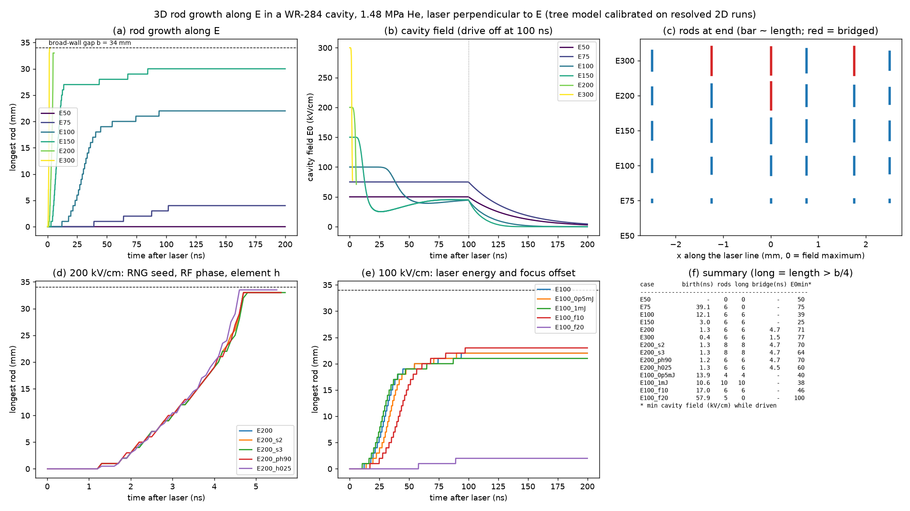

Plasma switch in a WR-284 cavity
He at 1.48 MPa (200 psig), 2.95 GHz, loaded Q 331. The laser runs along x, perpendicular to E (0.75 mJ, 1 ns, 20 µm waist),
and the RF drive is switched off 100 ns after the laser.
All results are simulated, not measured. Model fields are nominal. The ×3.91 multiplier was fitted to
one assumed breakdown probability; it is not a measured calibration or a universal conversion.
← Research home · model explanations · data, source and report
0. Laser-induced plasma dynamics in 3D
Open the 3D viewer →
One time slider follows the full sequence in the WR-284 cavity:
prescribed model seed (about 1e15 m−3 on the laser line) → rods growing along E (first rod 1.3 ns at 200 kV/cm) →
bridge between the broad walls (4.7 ns) → cavity field collapse → glow column at about 25 kV/cm →
modeled thermal contraction for some initial radii and drive durations. Arc-like results cross the model's skin-depth
validity limit and are not validated arc predictions. The pre-zero seed buildup is display-only; the rod model deposits
its seed at t=0.
Cases: 200 and 300 kV/cm with the drive off at 100 ns or continuous, 200 kV/cm with a 0.1 mm initial radius and the drive off at 100 ns,
and 100 kV/cm with the focus 20 mm off (a field-location effect, no bridge).
Accessible Technion S-band papers report helium light-onset delays and simulate cavity-plasma feedback at about 0.20 MPa.
Our 2.95 GHz cavity's field-collapse proxy is a different observable, not a validated reproduction of those delays.
Shafir's 9.6 GHz helium/air studies do not establish an Ar/He breakdown-field ordering.
Read the source comparison.
Reviewed by plasma, RF and optics expert agents; all three asked for fixes, which were applied before publishing
(Crank–Nicolson circuit step, harmonic-mean hand-off, sustained vs transient validity flags, prescribed seed-density display, phase labels driven by the model flags).
1. Rod growth along E in 3D
Interactive viewers (drag to orbit, slider for time). Each shows a 24 mm window around the laser crossing:
300 kV/cm ·
200 kV/cm ·
150 kV/cm ·
100 kV/cm ·
100 kV/cm, focus 20 mm off
| Nominal E0 | First rod | Longest rod | Bridge (34 mm) | Lowest E0 while driven |
|---|
| 300 kV/cm | 0.41 ns | 34 mm | 1.47 ns (3 rods) | 77 kV/cm |
| 200 kV/cm | 1.26 ns | 33 mm | 4.69 ns (central rod) | 71 kV/cm |
| 150 kV/cm | 3.0 ns | 30 mm | none (stalls) | 25 kV/cm |
| 100 kV/cm | 12.1 ns | 22 mm | none | 39 kV/cm |
| 75 kV/cm | 39 ns | 4 mm | none | 75 kV/cm |
| 50 kV/cm | none | — | none | 50 kV/cm |
Rods grow along E from the laser line to both broad walls. Several partial rods drain the cavity faster than the
forward power can refill it (36 ns). Below about 200 kV/cm (nominal) the cavity field collapses before any rod bridges.
Laser energy and focus change the onset only near threshold: at 100 kV/cm, onset is 10.6 / 12.1 / 13.9 ns for 1 / 0.75 / 0.5 mJ,
17 ns with a 10 mm focus offset and almost none at 20 mm.

2. Seed source in sealed helium
Direct helium photoionization is negligible in this model's assumed laser conditions. One illustrative calculation
assumes a trace organic impurity (8.8 eV, 0.1 ppm) and obtains about 260 photoelectrons per shot; the species and
concentration have not been measured. Photodetachment and background electrons remain possible, uncertain sources.
The user estimates an initial density of ~10⁶ electrons/cm³; its volume and measurement basis are not specified.
The viewer's prescribed seed is not a measurement of that estimate.
Self-breakdown without the laser: the approximately 10% rate is a user report without a shot count.
Using the illustrative field multiplier and assumed background-ion rates, one calculation gives 12–26% RF-only
breakdown. This is a sensitivity, not an independent calibration or proof of the seed mechanism.

3. Plasma under continued RF drive
The bridged rod from the 3D model is handed to a radial drive model (circuit + 1D radial plasma and gas):
- Hand-off transient (0–3 ns): ne 2e23–1e24 m−3, loaded Q falls to 4–5 and the gap field drops to 3–5 kV/cm.
- Glow: the field recovers to about 25 kV/cm, rod resistance 5–9 kΩ, gas below 1–2 kK.
- Arc-like thermal contraction under continued drive: 251 ns after bridging at 200 kV/cm and 201 ns at 300 kV/cm
(sensitivity range 71–643 ns for a 100 µm initial radius or 0.069 MW forward power). Gas reaches 12–15 kK.
- Drive off at 100 ns (experimental timing): the result depends on the initial channel radius.
With a 0.15–0.3 mm hand-off radius the modeled column stays diffuse (peak gas 0.7–2.1 kK) and decays. With 0.1 mm it contracts
inside the drive window: 71 ns after bridging at 200 kV/cm (11.7 kK) and 36 ns at 300 kV/cm (14.9 kK).
The reported experimental timing fires the laser at 4.9 µs of a 5 µs RF pulse, leaving about 100 ns
of drive after the trigger. With the model's 4.7 ns E200 bridge time, about 95 ns follows the modeled bridge; that is not
a measured bridge delay.
The model's glow/arc crossover is a 0.10–0.15 mm initial radius, inside the 0.05–0.3 mm range of the resolved streamer runs, so the model
cannot decide between glow and arc for the experiment. The model favours a diffuse column for wider channels
and in a lower-power sensitivity (contraction at 643 ns even with continuous drive). The channel width and brightness in the last 100 ns
of the pulse would decide it.
Caveats: the skin-depth limit of the radial model is crossed 14–78 ns before contraction in every case (21–610 ns after bridging), so the arc branch is a trend;
the arc peak is not time-step converged; and the forward power is nominal.